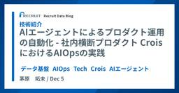
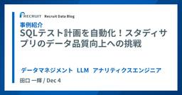
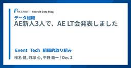

Recruit Data Blog
フィード

AIエージェントによるプロダクト運用の自動化 - 社内横断プロダクト Crois におけるAIOpsの実践
Recruit Data Blog
はじめに こんにちは。社内横断で利用されるデータ基盤 Crois の開発を担当している、茅原です。 本記事では、Croisと呼ばれる内製
2日前

SQLテスト計画を自動化！スタディサプリのデータ品質向上への挑戦
Recruit Data Blog
はじめに➡️ こんにちは、スタディサプリでアナリティクスエンジニアをしている田口一輝です。 この記事は、SQLによるアドホッ
3日前

AE新人3人で、AE LT会発表しました
Recruit Data Blog
はじめに こんにちは、データ推進室データマネジメント部でアナリティクスエンジニアをしている椎名、平野、町塚です。 私たちの所
5日前
アドベントカレンダーを今年も実施します！
Recruit Data Blog
はじめに こんにちは！Recruit Data Blog 担当の安藤です。 今年も残すところあと1ヶ月となりました。リクルートのデータ推進室で
6日前

【25新卒研修】大規模言語モデルことはじめ
Recruit Data Blog
1. はじめに こんにちは！株式会社リクルートに2025年に新卒入社した井上翔太と杉山海斗と申します。 「AIや機械学習の分野で
1ヶ月前
【解法紹介】RecSys Challenge 2025 で優勝しました
Recruit Data Blog
はじめに こんにちは。チェコ料理とチェコビールの大ファンになったリクルートの長妻です。 （チェコは国民一人当たりの年間ビール
1ヶ月前
【インターン体験記】アイテムの相互影響を考慮した推薦リスト作成手法の改善
Recruit Data Blog
はじめに はじめまして。私は東京科学大学修士課程に所属している石田茂樹と申します。普段は横田研究室でLLMの医療応用に関す
2ヶ月前
【25卒新人研修】専門人材の心得から学んだこと
Recruit Data Blog
はじめまして！2025年4月に株式会社リクルートにデータスペシャリストとして入社した長屋です。 株式会社リクルートの新卒社
2ヶ月前
個の学びを、組織の力へ。生成AI時代に実践する、「知見を循環させる」マネジメントとは
Recruit Data Blog
リクルートのデータ推進室は、数多くの領域にまたがるサービスのデータ活用を牽引し、事業の成長を支える部門横断的な組織です。
2ヶ月前
「“記憶に残る体験”が、スペシャリスト人生の第一歩を支える」──データ推進室 新人研修に込められた思い
Recruit Data Blog
リクルートグループの多様なサービスを横断し、データ活用を牽引するデータ推進室。そこには毎年、データサイエンティストや機械
2ヶ月前
【イベントレポート】「アナリティクスエンジニアが語る」第2弾の振り返りとアフタートークのご案内
Recruit Data Blog
はじめに こんにちは、Recruit Data Blog担当の森です。 2025年8月1日に、当社のアナリティクスエンジニア3名が登壇
3ヶ月前
RecSys Challenge 2025 で優勝しました
Recruit Data Blog
株式会社リクルートおよび株式会社インディードリクルートテクノロジーズのデータサイエンティストチームが、推薦システム分野の
3ヶ月前
データ推進室 室長が語る、異色のキャリアとデータが拓く事業成長の未来
Recruit Data Blog
リクルートのデータ推進室は、数多くの領域にまたがるサービスのデータ活用を牽引し、事業の成長を最前線で支える部門横断的な組
3ヶ月前
【開催レポート】アナリティクスエンジニアLT会&ワークショップで知識とスキルを深める！
Recruit Data Blog
はじめに こんにちは、アナリティクスエンジニアの森田です。 2025年3月10日、データ推進室データマネジメント部では、情報
4ヶ月前
分散型と集中型の両輪アプローチで実現するクラウドコスト最適化：内製データ基盤CroisのFinOps実践事例
Recruit Data Blog
はじめに こんにちは。社内横断で利用されるデータ基盤 Crois の開発を担当している、大澤と茅原です。 2025年6月18日に開催され
4ヶ月前
AWS Batch の制約を乗り越える - ECS on EC2 の直接制御による高速・柔軟なコンテナジョブ実行基盤の開発
Recruit Data Blog
はじめに こんにちは。データエンジニアとして社内横断で使われるデータ基盤 Crois の開発を担当している青木です。 内製のジョブ実行基
4ヶ月前
【イベントレポート】CHI 2025協賛のご報告
Recruit Data Blog
はじめに こんにちは、Recruit Data Blog担当の森です。 リクルートは、2025年4月26日〜5月1日にパシフィコ横浜で
4ヶ月前
【イベントレポート】リクルート流データ基盤塾 第2弾の振り返りとアフタートークのご案内
Recruit Data Blog
はじめに こんにちは、Recruit Data Blog担当の森です。 2025年6月23日、当社現役データエンジニアが登壇する「リク
4ヶ月前